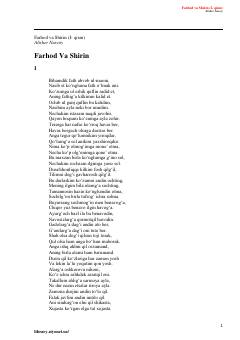

FVNavoiyning 'Farhod va Shirin' dostonining nasriy bayoni.
Alisher Navoiyning mashhur 'Xamsa' dostonlar to'plamiga kiruvchi 'Farhod va Shirin' asarining nasriy bayonidir. Asar Farhod va Shirin o'rtasidagi muhabbat hamda qahramonlik mavzusini qamrab oladi. Kitob o'quvchilarga klassik she'riy dostonni nasriy shaklda taqdim etadi.